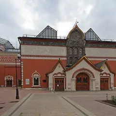
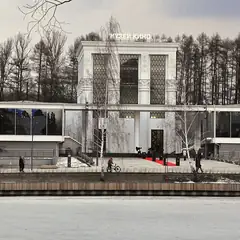

Подборку собрали 3 ноября, прошедшие события скрыты. Свежая афиша — на главной
Подборка редакции · Москва
Ночь искусств
Музеи, галереи и концертные залы открыты допоздна, многие — с бесплатным входом. Наметь два-три места рядом друг с другом и иди вечером.
- 8 мест, 2 плана и 4 события
- до 3 000 ₽ на человека
- до 4 ноября
Что в подборке 14
Зубовский бул., 2
История города в Провиантских складах, во дворе — кафе и выставки.
Подробнее и маршрут: Музей МосквыПозвать сюда: Музей Москвы
Фото: shakko, CC BY-SA 3.0 · Wikimedia Commons
ул. Петровка, 25
Главное здание Московского музея современного искусства в особняке XVIII века.
Подробнее и маршрут: ММОМА на ПетровкеПозвать сюда: ММОМА на Петровке
Фото: Inna vorobyova, CC BY-SA 4.0 · Wikimedia Commons
ул. Остоженка, 16
Лучшие фотовыставки города сразу на нескольких этажах.
Подробнее и маршрут: Мультимедиа Арт МузейПозвать сюда: Мультимедиа Арт Музей
Фото: JukoFF, CC BY-SA 4.0 · Wikimedia Commons

Лаврушинский пер., 10
Главное собрание русского искусства в Лаврушинском: от икон Рублёва до Шишкина и Врубеля.
Подробнее и маршрут: Третьяковская галереяПозвать сюда: Третьяковская галерея
Фото: A.Savin, CC BY-SA 3.0 · Wikimedia Commons
ул. Дольская, 1
Готический дворец, пруды и мосты. Красиво в любое время года, особенно на фото.
Подробнее и маршрут: ЦарицыноПозвать сюда: Царицыно
Фото: MS.Malysheva, CC BY-SA 4.0 · Wikimedia Commons
пр. Мира, 111
Под монументом «Покорителям космоса»: настоящие спускаемые аппараты, скафандры и макет станции «Мир».
Подробнее и маршрут: Музей космонавтикиПозвать сюда: Музей космонавтики
Фото: Музей космонавтики, CC0 · Wikimedia Commons
Садовая-Самотёчная ул., 3
Знаменитый театр кукол с часами-сказкой на фасаде, на Садовом кольце.
Подробнее и маршрут: Театр кукол ОбразцоваПозвать сюда: Театр кукол Образцова
Фото: tiger rus, CC BY 3.0 · Wikimedia Commons

пр. Мира, 119, стр. 36
Музей кино в павильоне ВДНХ: костюмы, декорации и интерактивные залы.
Подробнее и маршрут: Музей киноПозвать сюда: Музей кино
Фото: Gerarus, CC BY-SA 3.0 · Wikimedia Commons
Музей «Гараж», −1 этаж · м. Октябрьская · бесплатно · 12+
Инсталляция-диалог: две лампы общаются вспышками и звуком, а розовая зеркальная комната множит тебя до бесконечности. Вход бесплатный, фото выходят эффектные.
Подробнее: Вадим Фишкин «Словарь воображаемых мест»Позвать сюда: Вадим Фишкин «Словарь воображаемых мест»Билеты : Вадим Фишкин «Словарь воображаемых мест» (страница с билетами, откроется в новой вкладке)
Фото: Garage Museum of Contemporary Art, CC BY-SA 4.0 · Wikimedia Commons
Музей «Гараж», мезонин · м. Октябрьская · бесплатно · 12+
Можно поиграть в искусство: две 8-битные игры-инсталляции индийской художницы по мотивам советских детских книг. Бесплатно, а рядом Парк Горького.
Подробнее: Видеоигры Афры ШафикПозвать сюда: Видеоигры Афры ШафикБилеты : Видеоигры Афры Шафик (страница с билетами, откроется в новой вкладке)
Фото: Garage Museum of Contemporary Art, CC BY-SA 4.0 · Wikimedia Commons
Третьяковка на Кадашёвской · м. Третьяковская · от 450 ₽ · 12+
Больше 140 работ символиста Борисова-Мусатова из двадцати собраний, часть показывают впервые. Мечтательная и очень романтичная живопись.
Подробнее: Виктор Борисов-Мусатов. Гармония образаПозвать сюда: Виктор Борисов-Мусатов. Гармония образаБилеты : Виктор Борисов-Мусатов. Гармония образа (страница с билетами, откроется в новой вкладке)
Фото: Ludvig14, CC BY-SA 4.0 · Wikimedia Commons
ГМИИ им. А. С. Пушкина, Галерея искусства стран Европы и Америки, зал 16 · м. Кропоткинская
Камерная выставка о французском коллекционере Гюставе Файе, поклоннике Гогена, и его связях с русскими собирателями. Один зал — на час; по понедельникам закрыто.
Подробнее: Гюстав Файе и русские коллекционерыПозвать сюда: Гюстав Файе и русские коллекционерыБилеты : Гюстав Файе и русские коллекционеры (страница с билетами, откроется в новой вкладке)
Фото: Ghirlandajo, CC BY-SA 3.0 · Wikimedia Commons
- ГЭС-2 · Дом культуры · м. Кропоткинская
- 15 минут пешкомМузеон · Парк
Бесплатные выставки в бывшей электростанции, а потом прогулка вдоль реки до Музеона.
Открыть план: ГЭС-2 и прогулка к МузеонуПозвать сюда: ГЭС-2 и прогулка к Музеону
Фото: Юрий Д.К., CC BY 4.0 · Wikimedia Commons
- Московская консерватория · Концертный зал · м. Охотный ряд
- 1 минута пешкомUgolёk · Ресторан
Живая классика в Консерватории и ужин через дорогу — там всё готовят в дровяных печах.
Открыть план: Концерт и ужин на дровахПозвать сюда: Концерт и ужин на дровах
Фото: A.Savin, Free Art License · Wikimedia Commons


События подборки в календаре
Даты и время событий из подборки — в твоём календаре. Подпишись, и новые даты появятся сами.
Подписаться в календаре: события подборки «Ночь искусств»Google Календарь: события подборки «Ночь искусств» (откроется в новой вкладке)Файл .ics: события подборки «Ночь искусств»
Как позвать
- Выбери план, место или событие — в карточке адрес, цены и маршрут в Яндекс Картах.
- Нажми «Позвать сюда» — соберётся приглашение-игра для свидания или голосование для компании.
- Отправь ссылку в любой мессенджер: тебе ответят, а компания отметит, куда и когда может. Бесплатно и без регистрации.